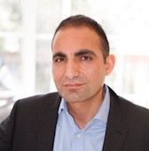

About Me
Serial entrepreneur and financial executive with extensive experience in managing high-growth tech companies in both government and private sectors. True business partner with proven track record of building and managing teams as well as developing business plans and strategies to achieve successful growth.
Globetrotter, amateur photographer and painter, coffee and wine snob, nature enthusiast, skier, volatility day trader and hopelessly addicted to software startups!
Moved to San Diego from Washington, DC a year ago and amazed by the different lifestyles of the East Coast and the West Coast.